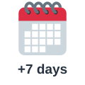
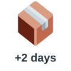
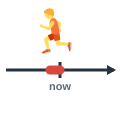
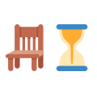

spend time
يقضي وقتًا
I love spending time with my kids.
أحب قضاء الوقت مع أطفالي.
Natural Word Partners
مرّر الماوس على السماعة أو اضغط عليها لتسمع النطق. السماعة الكبيرة نطق أمريكي (وهو المكتوب بالرموز)، وزر UK نطق بريطاني.
يقضي وقتًا
I love spending time with my kids.
أحب قضاء الوقت مع أطفالي.
يوفر الوقت
Online banking can save time.
يمكن للخدمات البنكية عبر الإنترنت أن توفر الوقت.
يضيع الوقت
Stop wasting time and start working.
توقف عن إضاعة الوقت وابدأ العمل.
لديه وقت
Do you have time for a coffee?
هل لديك وقت لفنجان قهوة؟
يجد وقتًا
I can't find time to read.
لا أجد وقتًا للقراءة.
وقت الفراغ
What do you do in your free time?
ماذا تفعل في وقت فراغك؟
بدوام كامل
She has a full-time job.
لديها وظيفة بدوام كامل.
بدوام جزئي
He works part-time at a café.
يعمل بدوام جزئي في مقهى.
يلتزم بموعد نهائي
We worked all night to meet the deadline.
عملنا طوال الليل للالتزام بالموعد النهائي.
يفوّت موعدًا نهائيًا
If you miss the deadline, you'll pay a fine.
إذا فوّت الموعد النهائي فستدفع غرامة.
يحدد موعدًا
I'd like to make an appointment for Tuesday.
أود تحديد موعد يوم الثلاثاء.
يلغي موعدًا
I need to cancel my appointment.
أحتاج إلى إلغاء موعدي.
يضبط المنبه
I set the alarm for 6:30.
ضبطت المنبه على 6:30.
يرن المنبه
My alarm goes off at six every day.
يرن منبهي في السادسة كل يوم.
الليلة الماضية
I slept badly last night.
نمت نومًا سيئًا الليلة الماضية.

الأسبوع القادم
I'm on holiday next week.
أنا في إجازة الأسبوع القادم.

بعد يومين
I'll get the results in two days.
سأحصل على النتائج بعد يومين.
منذ زمن طويل
It happened a long time ago.
حدث ذلك منذ زمن طويل.
منذ أيام قليلة
I saw your brother the other day.
رأيت أخاك منذ أيام قليلة.

هذه الأيام
Everyone is so busy these days.
الجميع مشغولون جدًا هذه الأيام.

في غضون ذلك
The doctor is coming. In the meantime, please sit down.
الطبيب قادم. في غضون ذلك، تفضل بالجلوس.
بشكل يومي
We check the figures on a daily basis.
نراجع الأرقام بشكل يومي.
مضيعة للوقت
That meeting was a waste of time.
كان ذلك الاجتماع مضيعة للوقت.
على الفور
I'll do it right away.
سأفعل ذلك على الفور.
ستسمع كلمة من كلمات الصفحة، فاضغط على الصورة التي تعبر عنها.
الكلمات المميزة هي كلمات هذه الصفحة. اضغط على أي كلمة ليبدأ الصوت منها ويكمل ما بعدها.
You look tired. Did you sleep badly last night?
تبدو متعبًا. هل نمت نومًا سيئًا الليلة الماضية؟
Yes. And every morning the alarm goes off at five, because I always forget to set the alarm for six.
نعم. وكل صباح يرن المنبه في الخامسة، لأنني أنسى دائمًا ضبط المنبه على السادسة.
Do you have time for a coffee?
هل لديك وقت لفنجان قهوة؟
Not really. These days I can't find time for anything. I took a part-time course, on top of my full-time job.
ليس حقًا. لا أجد وقتًا لأي شيء هذه الأيام. بدأت دورة بدوام جزئي فوق وظيفتي بدوام كامل.
What about your free time?
وماذا عن وقت فراغك؟
What free time? We have to meet a deadline for the bank next week. If we miss a deadline again, we'll lose the client.
أي وقت فراغ؟ علينا الالتزام بموعد نهائي للبنك الأسبوع القادم. وإذا فوّتنا موعدًا نهائيًا مجددًا فسنخسر العميل.
Is your team helping?
هل يساعدك فريقك؟
We spend time on long meetings that are a waste of time. I saw my manager the other day, and I told him so.
نقضي وقتًا في اجتماعات طويلة هي مضيعة للوقت. رأيت مديري منذ أيام قليلة وأخبرته بذلك.
You should use a shared calendar. It can save time, because people won't waste time asking for updates.
ينبغي أن تستخدموا تقويمًا مشتركًا. يمكنه أن يوفر الوقت، لأن الناس لن يضيعوا الوقت في السؤال عن المستجدات.
Good idea. I'll set one up right away. We used one a long time ago.
فكرة جيدة. سأنشئ واحدًا على الفور. استخدمنا واحدًا منذ زمن طويل.
And you need a doctor. Your back has been hurting for weeks.
وأنت بحاجة إلى طبيب. ظهرك يؤلمك منذ أسابيع.
I know. I had to cancel an appointment last month, so I'll make an appointment for next month. The results of the last tests will come in two days.
أعلم. اضطررت إلى إلغاء موعد الشهر الماضي، لذا سأحدد موعدًا الشهر القادم. وستصل نتائج الفحوصات الأخيرة بعد يومين.
In the meantime, please rest. Check your health on a daily basis, not only your email!
في غضون ذلك، استرح من فضلك. اهتم بصحتك بشكل يومي، وليس ببريدك الإلكتروني فقط!
الكلمات المميزة هي كلمات هذه الصفحة. اضغط على أي كلمة ليبدأ الصوت منها ويكمل ما بعدها.
A long time ago, I believed that being busy meant being successful. I had a full-time job and a part-time evening job, and I did not have time for my friends. I could not find time to read, and I had no free time at all. Then the other day I looked at my diary and realized how much time I waste. I waste time in useless meetings, and I spend time on tasks that do not matter. Much of it is a waste of time. So I made some changes right away. Now I set the alarm for six, and when the alarm goes off, I get up immediately. I check my priorities on a daily basis, and this simple habit helps me save time. I still have to meet a deadline every month, but I am much less likely to miss a deadline now. These days, when I need to see the doctor, I make an appointment early, and I rarely have to cancel an appointment. Last night I even had dinner with my old friends. I have an important trip next week, and I leave in two days. In the meantime, I am packing slowly and enjoying every moment.
منذ زمن طويل كنت أعتقد أن الانشغال يعني النجاح. كانت لدي وظيفة بدوام كامل ووظيفة مسائية بدوام جزئي، ولم يكن لدي وقت لأصدقائي. لم أكن أجد وقتًا للقراءة، ولم يكن لدي وقت فراغ على الإطلاق. ثم منذ أيام قليلة نظرت إلى مفكرتي وأدركت كم أضيّع من الوقت. فأنا أضيع الوقت في اجتماعات بلا فائدة، وأقضي وقتًا في مهام غير مهمة. والكثير من ذلك مضيعة للوقت. فأجريت بعض التغييرات على الفور. والآن أضبط المنبه على السادسة، وعندما يرن المنبه أنهض مباشرة. وأراجع أولوياتي بشكل يومي، وتساعدني هذه العادة البسيطة على توفير الوقت. ما زال عليّ الالتزام بموعد نهائي كل شهر، لكن احتمال تفويتي موعدًا نهائيًا صار أقل بكثير الآن. وفي هذه الأيام، حين أحتاج إلى زيارة الطبيب أحدد موعدًا مبكرًا، ونادرًا ما أضطر إلى إلغاء موعد. بل إنني تناولت العشاء الليلة الماضية مع أصدقائي القدامى. ولدي رحلة مهمة الأسبوع القادم، وأغادر بعد يومين. وفي غضون ذلك أحزم أمتعتي على مهل وأستمتع بكل لحظة.